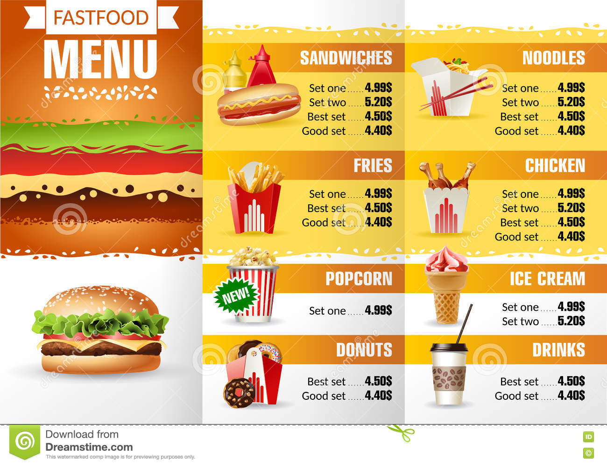

<a-scene markers_start vr-mode-ui="enabled: false" color-space="sRGB" renderer="gammaOutput: true"
  embedded arjs='debugUIEnabled: false; sourceType: webcam; patternRatio: 0.85; trackingMethod: best;'
  gesture-detector>
  <a-assets>
	
	
	
		<a-asset-item id="back" src="../../../assets/models/hoverboard.glb"></a-asset-item>
  </a-assets>  	
  <a-entity id='userCamera' camera>
		<a-cursor> </a-cursor>
    	</a-entity>
	</a-scene>